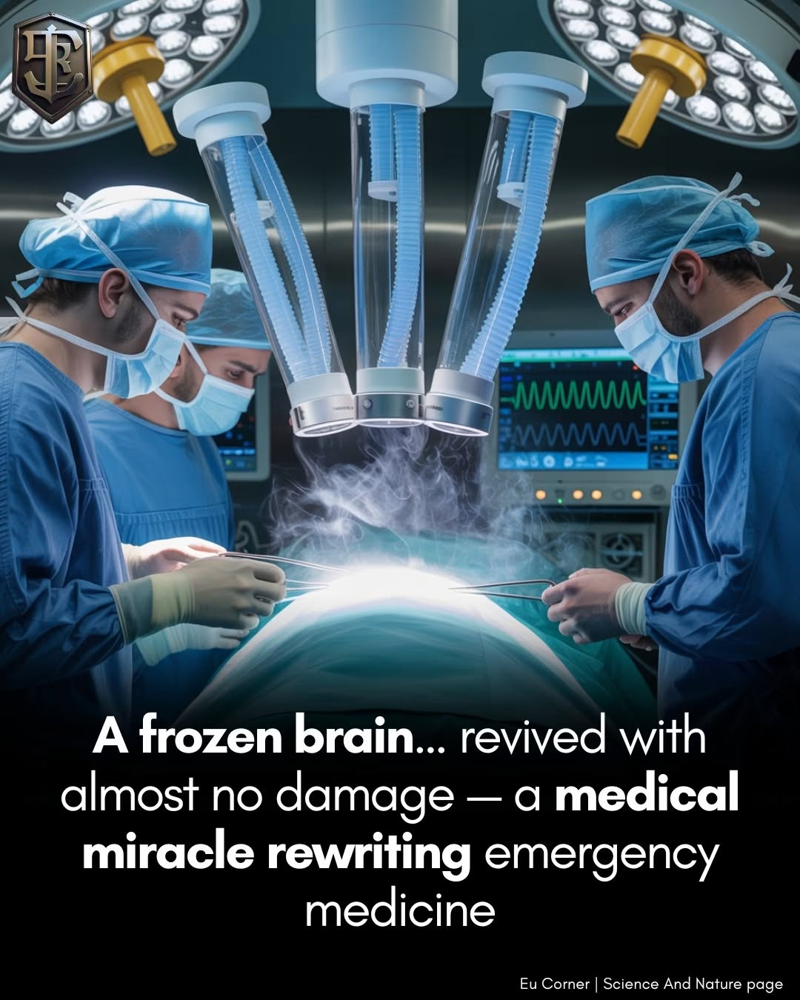

A possible breakthrough in brain surgery for victims of acute strokes that must be managed surgically.
#strokeHD #brainHD #surgeryHD #brainsurgeryHD
The Brain Frozen to Save a Life
Doctors have performed one of the most unbelievable medical procedures ever attempted: deliberately cooling a human brain to near-freezing temperatures to save a dying patient. It happened during a rare emergency surgery when a young man’s brain was swelling uncontrollably after a traumatic accident. Traditional interventions weren’t working, and every minute brought him closer to irreversible brain death. In that moment, surgeons made the boldest decision possible—put his brain into deep cold shutdown.
The team quickly surrounded the head with controlled cooling pads and ice-circulating devices, slowly dropping the temperature of his brain far below normal. As the cold spread, brain activity nearly flatlined. But that was the goal. By slowing every neuron and blood vessel to a crawl, doctors bought precious time to repair internal bleeding and remove pressure that would have killed him within minutes. Nurses monitored electrical activity as the room stayed tense and silent.
For forty long minutes, the patient’s brain remained in a state that doctors describe as “paused but not lost.” No movement. No typical brain waves. Just the faint bioelectric life that meant the organ wasn’t dead—only waiting. In this suspended state, surgeons fixed the injuries that couldn’t have been operated on while the brain was functioning normally. The cold protected the tissue from swelling and cell death, preventing what would normally be catastrophic damage.
When doctors slowly warmed the brain, no one knew what to expect. Would he wake up? Would he walk again? Speak? Remember? Miraculously, the patient regained consciousness within hours. Not only did he survive, but scans showed almost no permanent brain damage. A procedure once considered impossible might now become a new frontier for saving stroke and trauma victims.
This breakthrough proves that medicine is entering an era where even the brain—the most fragile organ—can be paused, protected, and revived. A technique once seen only in science fiction may soon become standard in emergency rooms around the world.
